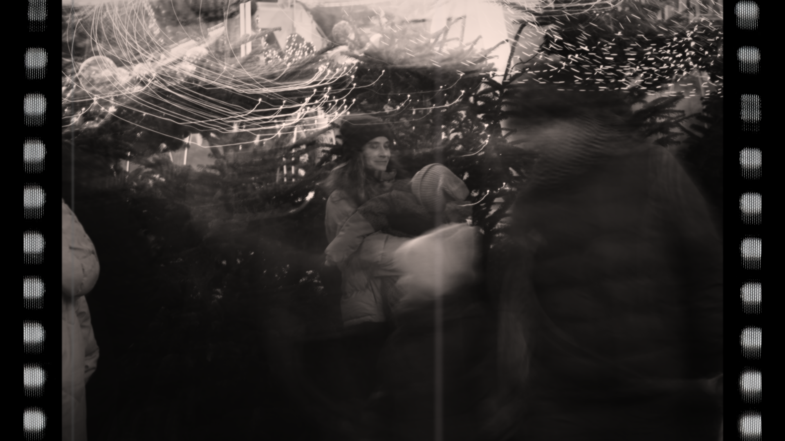
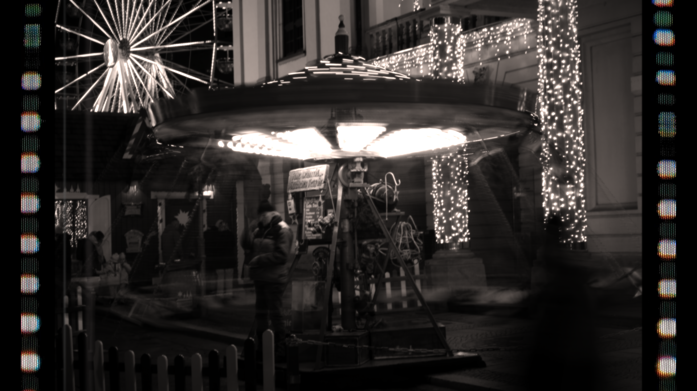
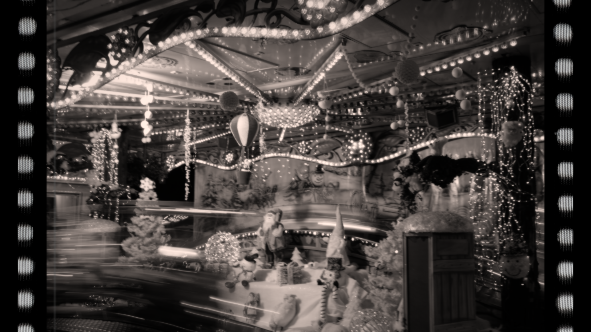
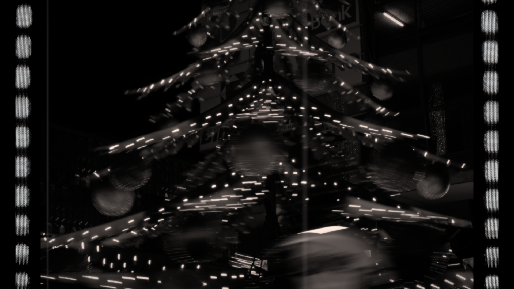
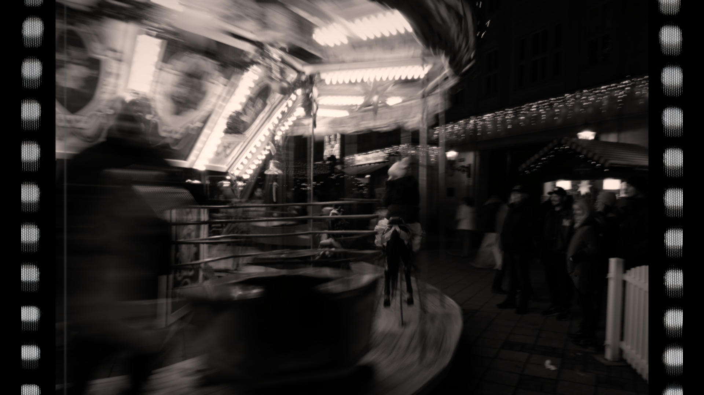
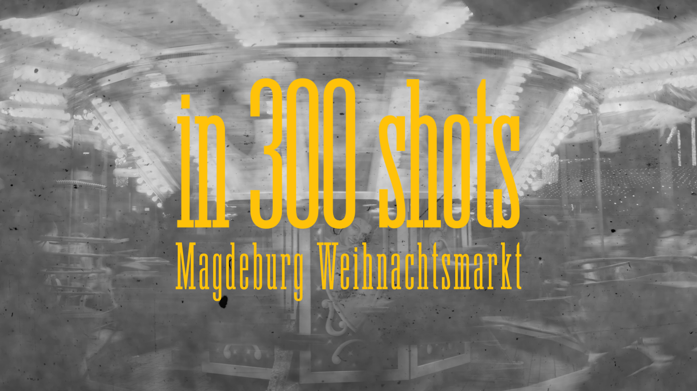
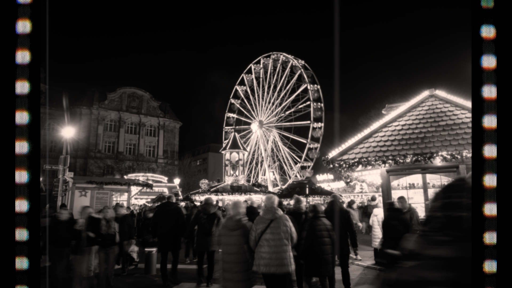

Magdeburg Weichnasmarkt
CONCEPT
This small personal project was born during my first German winter, spent between the warmth of the house and the lively festive "Christmas Markets" around the city of Magdeburg.
The distinctive smell of cinnamon, the river of people, the lights, the many carousels, everything was alive. I felt as if I was walking through a memory of mine, while also living it for the first time. I could see myself reliving it, margins faded, fragments lost.
How to convey such a feeling was the question I kept returning to. I decided to embrace a slower pace of time, shooting a sequence of photographs to simulate a shutter speed effect of around 4 fps, then stitching them together to create a moving image that feels suspended between stillness and motion.
“But how do you film a memory
as it unfolds before you?”





STILLS



